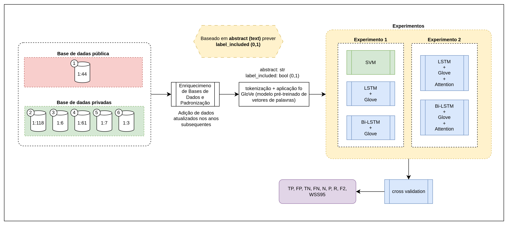

Status Report - 29/06/2025
Intrudução
Este relatório de status tem como objetivo documentar o progresso realizado no projeto de mestrado ao longo do mês de Junho de 2025, com foco especial no período entre os dias 04/06 e 29/06. As atividades desenvolvidas neste intervalo concentram-se no estudo aprofundado, replicação parcial e análise crítica do artigo "Evaluation of attention-based LSTM and Bi-LSTM networks for abstract text classification in systematic literature review automation".
O trabalho se insere no contexto de automação de Revisões Sistemáticas da Literatura (RSL), mais especificamente na etapa de triagem de resumos (abstract screening), que representa um dos principais gargalos em termos de esforço humano. Foram realizadas atividades que incluem a análise teórica do artigo, a construção de um pipeline experimental baseado no modelo proposto pelos autores, a coleta e preparação das bases de dados públicas disponíveis, bem como a avaliação quantitativa dos resultados obtidos em comparação com os relatados originalmente.
Além disso, parte das descobertas serão incorporadas aos capítulos da dissertação em andamento, com destaque para a fundamentação teórica (Capítulo 2), descrição da metodologia (Capítulo 4), estudos de caso (Capítulo 5) e estruturação inicial da análise de resultados (Capítulo 6). O relatório também descreve os principais obstáculos enfrentados na reprodutibilidade dos experimentos e apresenta os próximos passos para aprofundar a calibração de modelos e a ampliação dos testes.
Descrição das Atividades Realizadas
As atividades realizadas foram:
- Estudo detalhado do artigo "Artigo Evaluation of attention-based LSTM and Bi-LSTM networks for abstract text classification in systematic literature review automation"
- Identificar o problema que o artigo resolve
- Identificar o método utilizado
- Identificar as métricas utilizadas
- Fazer uma primeira análise experimental dos resultados
- Busca das bases de dados necessárias
- Busca se há necessidade de pré-processamento
- Tentar replicar o máximo possível os resultados
- Adicionar informações na tese de mestrado
- Capítulo 2 (Fundamentação Teórica)
- Capítulo 4 (Método Proposto)
- Capítulo 5 (Estudos de Caso)
- Capítulo 6 (Análise e Discussão de Resultados)
Observação Capítulo 6
O caso do Capítulo 6 seria apenas montar o esqueleto dos resultados
Experimentos/Estudos Realizados
Fundamentação e Objetivos
O artigo analisado propõe automatizar a etapa de triagem de resumos (abstract screening) no processo de Revisão Sistemática (Systematic Review - SR), que é considerada a mais onerosa. Para isso, foram explorados modelos de Deep Learning como LSTM e Bi-LSTM com embeddings GloVe e mecanismos de atenção.
Dois principais objetivos norteiam o trabalho:
1. Avaliar a viabilidade de usar modelos LSTM e Bi-LSTM, comparando-os com métodos tradicionais como SVM + TF-IDF;
2. Investigar se o uso de mecanismos de atenção melhora a precisão sem comprometer o recall, buscando manter este último em >= 95%.
Metodologia Implementada
- Bases de dados: Foram utilizadas seis bases de dados de revisões sistemáticas (5 públicas e 1 privada). Apenas as públicas foram usadas no experimento.
- Pré-processamento: Tokenização, remoção de pontuação e stopwords. Lemmatização/stemming foram evitados para não perder informação semântica importante.
- Vetorização: Utilizou-se GloVe com 300 dimensões, considerando o tamanho médio dos resumos.
- Modelos testados:
- LSTM + GloVe
- Bi-LSTM + GloVe
- LSTM + GloVe + Attention
- Bi-LSTM + GloVe + Attention
- Técnica de balanceamento: Aprendizado sensível a custo (cost-sensitive learning) usando pesos proporcionais ao desbalanceamento entre classes.
- Avaliação: 5-fold cross-validation com métricas: Precision, Recall, F2-score e WSS@95.
Métricas de Avaliação
- Precision: TP / (TP + FP)
- Recall: TP / (TP + FN)
- F2-Score: (5 * P * R) / (4 * (P + R))
- WSS@95: Quantifica o esforço economizado ao atingir 95% de recall — métrica crítica em SRs.
Resultados Experimentais Parciais
Foi possível executar a replicação parcial dos experimentos com os modelos propostos. Os primeiros testes foram feitos com a base Appenzeller-Herzog 2020, utilizando a arquitetura Bi-LSTM com e sem atenção. O pipeline envolveu:
- Treinamento com batch size 64, 10 epochs;
- Otimização com Adam (lr = 3e-4 para LSTM, 1e-4 para Bi-LSTM);
- Dropout aplicados para evitar overfitting;
- Predição com limiar calibrado para recall >= 95%.
Resultados numéricos e gráficos de precisão vs. recall foram extraídos do notebook e servirão como base para os capítulos da dissertação.
Estudo Detalhado do "Artigo Evaluation of attention-based LSTM and Bi-LSTM networks for abstract text classification in systematic literature review automation"
O primeiro passo realizado foi um estudo aprofundado no artigo Artigo Evaluation of attention-based LSTM and Bi-LSTM networks for abstract text classification in systematic literature review automation a fim de obter informações mais detalhadas sobre as bases para o Capítulo 2 (Fundamentação Teórica), Capítulo 4 (Método Proposto), Capítulo 5 (Estudos de Caso) e Capítulo 6 (Análise e Discussão de Resultados).
O Fluxo executado pelo artigo envolve a utilização de 6 bases de dados, sendo 1 privada e 5 públicas. As 7 bases de dados foram enriquecidas usando metodologias descritas pelos próprios autores. A base de dados original SYNERGY dataset e a base de dados enriquecida com anos recentes Systematic Review Datasets.
Cada base de dados possui os artigos inclusos e excluídos (presente na coluna label_included). Para a base de dados enriquecida, tem-se a seguinte comparação separada por base:
| Índice | Nome do conjunto de dados | Tópico | Incluídos | Excluídos | IR (incluído:excluído) |
|---|---|---|---|---|---|
| 1 | Aceves-Martins2021 (AM)* | Saúde Bucal | 18 | 789 | 1:44 |
| 2 | Appenzeller-Herzog 2020 (AH) | Doença de Wilson | 29 | 3424 | 1:118 |
| 3 | Bannach-Brown 2019 (BB) | Modelo Animal de Depressão | 280 | 1713 | 1:6 |
| 4 | Cohen ACEInhibitors 2006 (CACE) | Antipsicóticos atípicos | 146 | 974 | 1:7 |
| 5 | Cohen AtypicalAntipsychotics 2006 (CAA) | ACE Inhibitors | 41 | 2503 | 1:61 |
| 6 | Cohen OralHypoglycemics 2006 (COH) | Hipoglicemiantes orais | 136 | 367 | 1:3 |
Observação base de dados Aceves-Martins2021 (AM)*
A base de dados Aceves-Martins2021 (AM) não será usada para os experimentos devido a falta de acesso a ela na internet. Com isso, para a tese de mestrado, será usada somente as públicas.
Após o enriquecimento das bases de dados, foi separado apenas as informações {abstract, label_included} de cada conjunto. O abstract foi tokenizado e depois mapeado usando o arquivo do Glove de 300 dimensões para obter uma matriz com vetores densos.
No artigo, o treinamento ocorreu segundo os hiperparâmetros
| Hiperparâmetro | Value |
|---|---|
| Embedding dimension | 300 |
| LSTM units | 100 |
| Bi-LSTM unitss | 100 |
| Optimiser | Adam |
| Learning rate (optimiser) | 3 * 10^(-4) for LSTM |
| Learning rate (optimiser) | 3 * 10^(-4) for Bi-LSTM |
| Dropout for LSTM | 0.2, 0.5 |
| Dropout for Bi-LSTM | 0.2, 0.02 |
| Batch size | 64 |
| Epochs | 10 |
O artigo utilizou-se de dois experimentos. O primeiro com SVM, LSTM + Glove e Bi-LSTM + Glove. O segundo foi LSTM + Glove + Attention e Bi-LSTM + Glove + Attention.

Com isso, cada base de dados foi submetida a uma simulação e ao final foi realizado um cross validation com os modelos já treinados. Ao final, foram obtidos as métricas:
- TP: True Positives — exemplos positivos corretamente classificados como positivos
- FP: False Positives — exemplos negativos incorretamente classificados como positivos
- TN: True Negatives — exemplos negativos corretamente classificados como negativos
- FN: False Negatives — exemplos positivos incorretamente classificados como negativos
- N: Number of Negatives — total de exemplos negativos no conjunto (geralmente: TN + FP)
- P: Precision — proporção de positivos preditos que são realmente positivos: P = TP/(TP + FP)
- R: Recall — taxa de verdadeiros positivos: R = TP/(TP + FN)
- F2: F2-Score — métrica F que dá mais peso ao recall (peso 2): F2 = 5 * P * R / (4 * (P + R))
Resultados Obtidos
Os resultados obtidos foram os presentes na tabela abaixo:
| Dataset | Classifier | TP_gerado | FP_gerado | TN_gerado | FN_gerado | N | P_gerado | R_gerado | F2_gerado | WSS95_gerado | TP_pdf | FP_pdf | TN_pdf | FN_pdf | P_pdf | R_pdf | F2_pdf | WSS95_pdf | erro_P | erro_R | erro_F2 | erro_WSS95 |
|---|---|---|---|---|---|---|---|---|---|---|---|---|---|---|---|---|---|---|---|---|---|---|
| Appenzeller-Herzog_2020 | SVM with SGD + TF-IDF | 26 | 2333 | 0 | 0 | 2333 | 0.0110216 | 1 | 0.0527812 | -0.05 | 5 | 4423 | 329 | 468 | 0.0117 | 1 | 0.0558 | 4.28 | 0.000678381 | 0 | 0.00301884 | 4.33 |
| Appenzeller-Herzog_2020 | SVM with SGD + TF-IDF | 26 | 2333 | 0 | 0 | 2333 | 0.0110216 | 1 | 0.0527812 | -0.05 | 5 | 4423 | 329 | 468 | 0.0117 | 1 | 0.0558 | 4.28 | 0.000678381 | 0 | 0.00301884 | 4.33 |
| Appenzeller-Herzog_2020 | Bi-LSTM + GloVe | 26 | 2333 | 0 | 0 | 2333 | 0.0110216 | 1 | 0.0527812 | -0.05 | 4 | 27044 | 138 | 239 | 0.015 | 0.9615 | 0.0705 | 24.25 | 0.00397838 | 0.0385 | 0.0177188 | 24.3 |
| Appenzeller-Herzog_2020 | Bi-LSTM + GloVe + Attention | 26 | 2333 | 0 | 0 | 2333 | 0.0110216 | 1 | 0.0527812 | -0.05 | 4 | 472 | 0 | 0 | 0.0215 | 0.9615 | 0.0986 | 45.66 | 0.0104784 | 0.0385 | 0.0458188 | 45.71 |
| Appenzeller-Herzog_2020 | LSTM + GloVe | 26 | 2333 | 0 | 0 | 2333 | 0.0110216 | 1 | 0.0527812 | -0.05 | 5 | 1980 | 0 | 0 | 0.0081 | 1 | 0.039 | -5 | 0.00292162 | 0 | 0.0137812 | 4.95 |
| Appenzeller-Herzog_2020 | LSTM + GloVe + Attention | 26 | 2333 | 0 | 0 | 2333 | 0.0110216 | 1 | 0.0527812 | -0.05 | 5 | 472 | 0 | 0 | 0.0132 | 0.9474 | 0.0623 | 37.01 | 0.00217838 | 0.0526 | 0.00951884 | 37.06 |
Os valores obtidos nas réplicas apresentaram desvios em relação aos relatados no artigo, especialmente nas métricas de WSS@95 e F2, que são sensíveis ao balanceamento de classes e aos thresholds de corte aplicados nos classificadores. Esses desvios indicam que os hiperparâmetros utilizados nos modelos reproduzidos podem não estar completamente ajustados conforme o artigo original, o que justifica novos experimentos de calibração.
Problemas Encontrados
- Resultados obtidos nos experimentos divergiram dos reportados no artigo original, especialmente nos valores de FP, WSS e F2-score.
- Diferenças podem ser atribuídas a:
- Uso de thresholds padrão ao invés dos calibrados para Recall >= 95%.
- Configurações de dropout e learning rate não exatas.
- Potencial diferença na amostragem ou divisão dos folds de cross-validation.
- Falta de reprodutibilidade total por ausência de código-fonte oficial dos autores.
Próximos Passos
- Escrever capítulos restantes da dissertação baseado nos experimentos
- Capítulo 2: Modelos utilizados
- Capítulo 3: Filtrar artigos importantes
- Capítulo 4: Descrever a metodologia aplicada
- Capítulo 5: Descrever os experimentos
- Implementar um estudo sistemático de hiperparâmetros (com grid search ou optuna)
- Calibrar thresholds baseados no recall de 95% antes do cálculo das métricas
- Redigir um RFC (Request for Comments) interno sobre:
- A expansão dos experimentos (novos modelos e datasets)
- Estratégias para análise de sensibilidade dos hiperparâmetros
- Automatizar o pipeline de avaliação e comparação com benchmarks de artigos